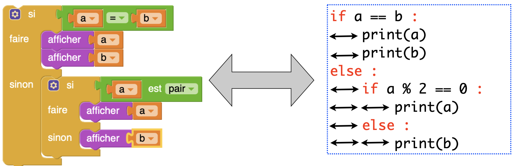
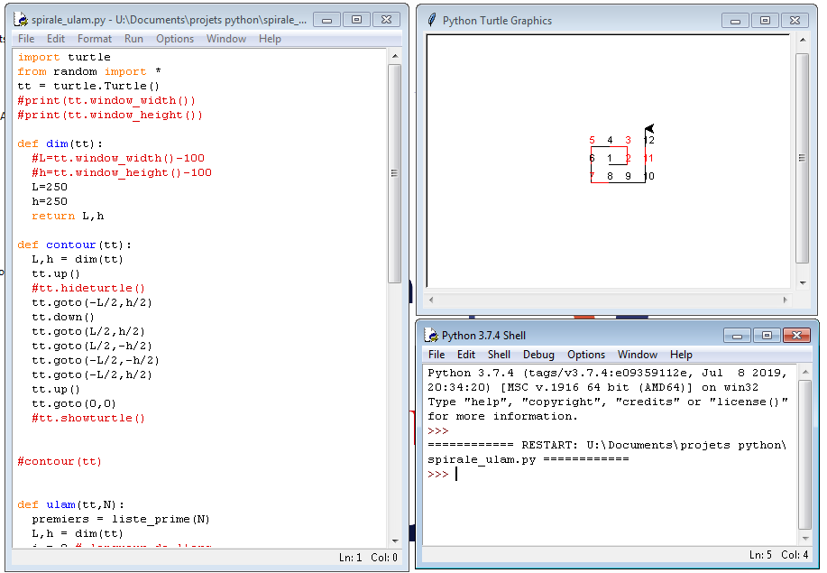

page3 version md
Variables
On a vu dans le TP précédent qu’il était possible de créer des objets avec la console python, par exemple des chaines de caractère, ou valeurs numériques.
Mais si on veut les réutiliser, il va falloir les stocker dans des variables.
Nommer une variable
Variables: Une variable est un espace de stockage qui porte un nom. En python, on assigne une valeur à une variable en utilisant le symbole =.
Exemple: L’instruction suivante stocke Carl dans la variable mon_nom.
Lorsque l’on veut afficher le contenu d’une variable, on met cette variable SANS les guillemets, en argument de la fonction print (entre les parenthèses):
Lorsque le programme arrive à cette instruction, il affiche:
Carl
Remarque sur le nommage: Le nom d’une variable contient des lettres et des chiffres. On peut choisir toute chaine de caractère pour nom de variable, de la simple lettre jusqu’à la longue chaine de caractères (sans espaces, mais les underscores sont autorisés). Ne pas commencer par un chiffre:
localiser l’emplacement mémoire
Pour localiser l’emplacement mémoire d’une variable, utiliser la fonction native id.
Utiliser un editeur python pour saisir les lignes suivantes:
On peut vérifier que les 2 variables, a et b, pointent vers le même objet, l’entier 5, grace à l’adresse mémoire qui est identique.
Par contre, si vous modifiez le contenu de l’une de ces variables, vous devriez voir que l’adresse n’est plus la même. (à tester vous-même).
Affectation multiple
Il existe plusieurs façons en python d’affecter un objet:
Ces lignes sont équivalents à l’affectation multiple:
Opérations logiques (True/False)
Opérateurs d’ordre
En reprenant l’affectation multiple vue plus haut, tester les opérations logiques:
Puis tester les opérations:
Ces expressions renvoient True ou False. Ce sont des opérations logiques.
Remarque: Si vous utilisez un notebook ipython, seul le résultat de la dernière ligne de la cellule est affiché.
Question Quels sont les opérateurs: supérieur à, inferieur à, égal à, différent de, supérieur ou égal à?
Opérateurs AND, OR
Plusieurs expressions logiques peuvent être combinées à l’aide des opérateurs and, or.
Lorsque 2 expressions logiques sont reliées avec and, cela renvoie True si et seulement si chacune des 2 expressions est evaluée à True.
Avec or, il suffit que l’une d’elles soit évaluée à True.
Tester l’exemple suivant:
Boucle bornée
Principe
Une boucle bornée permet de repeter un élément de code un nombre fixe de fois.
Pour repeter par exemple 4 fois un bloc de code, on utilise l’instruction:
for <variable> in range(4):
Ce bloc de code est indenté, sous l’instruction qui commence par for.
A chaque itération, i est incrementé.
Exemple:
Exercice 1
Ecrire un programme qui affiche la table de multiplication par 7.
Exercice 2
Ecrire un programme qui réalise la multiplication de 1024 par 16, en n’utilisant que des additions (par de ): adapter pour cela l’algorithme vu en classe.
Boucle non bornée
Principe
Une boucle non bornée permet de répéter un élément de code un nombre à priori inconnu de fois.
On écrit l’instruction: while <condition>:
Le bloc de code est indenté sous cette première ligne.
Cette boucle repète l’execution d’un bloc de code, tant que la <condition> est evaluée à True.
Exemple:
Exercice
Adapter l’algorithme vu en classe pour faire la division entière de 39 par 8. Vous ne devrez utiliser que la soustraction comme opérateur.
Expression conditionnelle
Principe
Définition : Une instruction conditionnelle vérifie si une certaine condition est vraie avant d’executer son code :
Exemple :
Les blocs du programme
En Python, on utilise l’indentation (le retrait de la ligne) pour rendre compte des blocs de code.

de pybloc au script python
L’alternative if - else
Une instruction if - else contient une instruction if qui s’execute si la condition est True et une clause else qui s’execute si la condition est False.
Un bloc if - elif - else comprend une premiere instruction if, puis une suite de conditions de tests elif si le premier test echoue, puis un bloc else qui s’execute si tous les autres tests échouent.
Même s’il n’est pas obligatoire, il est fortement recommandé de finir une série de conditions elif par le bloc else.
Exercice 1
Compléter (et tester) le programme suivant qui demande votre age (fonction input), et vous laisse entrer en discothèque si vous avez 18 ans:
Exercice 2
Pour la rentrée 2021, les règles sanitaires suivantes s’appliquent dans les établissement scolaires:
les élèves non-vaccinés subiront des restrictions plus importantes que les autres. Au premier cas de Covid identifié dans une classe, les cas-contacts non-vaccinés devront s’isoler pendant 7 jours et suivre les cours à distance. Les élèves vaccinés qui seraient cas-contact pourront, eux, venir en classe.
Réaliser un programme qui indique ce que l’élève doit faire, selon sa situation. Les variables utilisées auront pour valeur 0 ou 1. Par exemple, on pourra utiliser une variable appelée cas_contact qui vaudrait 1 si l’élève est cas contact, 0 sinon.
Mini projet
Partir du fichier exemple discotheque.py
- Télécharger le programme suivant sur le disque dur: discotheque.py
- Déplacer le fichier dans un dossier de vos documents que vous nommerez de manière explicite (par exemple
/python) - dezipper le fichier
- Ouvrir l’IDLE python présent dans la distribution Winpython
- Lancer le programme.
- Adapter le script du programme pour les 2 exercices précédents. Il s’agit d’une interface graphique TKinter, qui permettra d’illustrer les exercices sur l’entrée en boite de nuit, ainsi que celui du covid.
IDLE python
L’IDLE python fait partie de l’environnement Winpython. L’interêt de cet IDE est sa bonne gestion des fenêtre graphiques que vous allez ouvrir et fermer.
Pour le lancer, aller dans le menu Démarrer du PC, puis choisir IDE python.
Seule la fenêtre d’edition s’ouvre alors. Vous pouvez y taper ou coller votre script python. Pour executer : Touche F5.
Deux autres fenêtres s’ouvrent alors:
- la fenêtre graphique (turtle, Tkinter)
- la console interactive (le shell).
Vous pouvez alors organiser vos fenêtres comme sur l’image suivante.

A gauche, l'editeur python, à droite les fenêtres graphique et le shell